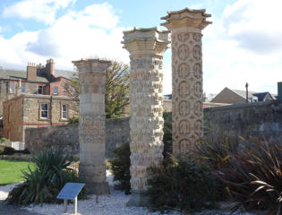
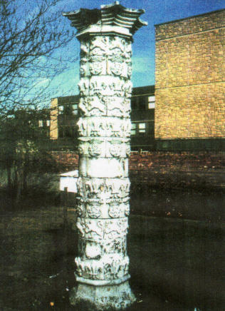
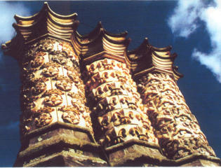
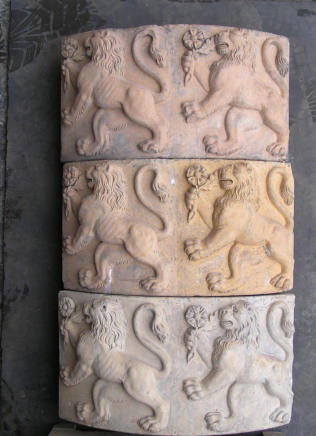
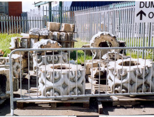
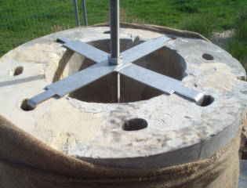
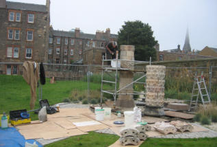
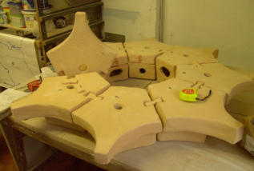
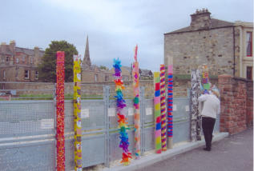

The Portobello Coade Stone Pillars
Three ornamental Coade stone pillars, (figure 1), form the focal point of the community garden on the Promenade at the foot of John Street, Portobello. The pillars, which date from the early 19th Century, used to stand in the garden of Argyle House, Hope Lane, off Portobello High Street, (figure 2). A map of 1890 shows the three pillars in the garden of the house, which was then the manse of St James’s Church, but it is not known how the pillars came to be in Portobello in the first place. In 1989, the City of Edinburgh Council granted planning permission for an extension to be built on to the front of the 1820s house, which was to be converted into flats, without making arrangements for the safekeeping of the pillars which were listed structures. Portobello Amenity Society members however turned up in force on the day the bulldozers toppled the pillars and succeeded in having the sections of the pillars rescued and placed in council storage, with the council accepting responsibility for and ownership of the pillars. Since then, Portobello Amenity Society campaigned to have the pillars re-erected on a suitable site in Portobello. Research by Celia Butterworth, a member of the society, proved that the pillars were Coade stone and that the designs on the two smaller pillars were identical to the Coade stone chimneys of Dalmeny House, built in 1817, near South Queensferry, seat of Lord Rosebery, (figure 3). There are three designs on the Dalmeny chimneys and on the two smaller Portobello pillars - the fleur-de-lis, Tudor rose and crown and lion. The rose refers to the Rosebery name and it’s possible that the flower held by the lion may be a primrose, (figure 4), Primrose being the family name of the Earl of Rosebery. Records show that around 1820, £3,800 worth of Coade stone, which included decorations in addition to the chimneys, was shipped to Leith from the Coade factory in Lambeth so it is possible that some of the chimney sections came to Portobello then. The third larger Coade stone pillar which stood in the garden of Argyle House has a hoop and fleur-de-lis design, quite different from the “Dalmeny” designs. Its construction is also different as it is made up of complete circles whereas the circles of the two smaller pillars are made up of quadrants. The larger pillar was not designed as a chimney and its origin is unknown. By 2005 the City of Edinburgh Council had agreed that the pillars could be re-erected in a new community garden to be built to replace a disused paddling pool on Portobello Promenade and that they would maintain the pillars. As the council was unable to fund the restoration and re-erection of the pillars, Portobello Amenity Society made an application to the Heritage Lottery Fund, which was successful, and was granted £49,700 which was about 80% of the total cost. The council contributed by building foundations for the pillars and providing the internal metal supports for each pillar, while Portobello Community Council and Portobello Amenity Society each contributed £2,400. Since the pillars’ removal from the garden of Argyle House, the council had stored them in various locations, often in jumbled piles outdoors. One location was next to a recycling depot, (figure 5), which resulted in eight of the quadrants decorated with the lion holding the primrose being stolen. Several of the quadrants had been damaged when the pillars had been toppled and the various moves while in council storage had caused further damage. As the pillars were to be re-erected as the centrepiece of a garden which was open to the public, it was necessary that each of the pillars should be supported by a designed internal metal rod which had metal brackets across its diameter, (figure 6). These held the rod tightly within the inner surface of the Coade quadrants of the two smaller pillars to provide the necessary rigidity. The same principle was used with the larger pillar which consisted of complete circles of a different design. The metal rod was screwed into the foundation of each pillar and into a metal cap at the top of the pillar thus ensuring the structural stability of each pillar. The pillars were expertly restored by Graciela Ainsworth and her team of sculpture conservators who removed several layers of paint of different colours from the pillars, the top layer being battleship grey, (figure 2), and repaired damaged sections. There were sufficient quadrants with the fleur-de-lis design to construct one pillar to match one of the Dalmeny chimneys. There was only one original base and crown top however so it made sense that one pillar should consist of original elements, (figure 7). The conservators made replacement quadrants, using a modern Coade mix, for the ones with the lion design that had been stolen. There were several blank quadrants in the pillars in the Argyle House garden which were placed between complete circles of the lion and the Tudor rose and crown designs to form the second smaller pillar. As only one pillar had a crown top, it was decided that the other smaller pillar should have a matching new top. A local potter and amenity society member, Alison Robinson, after considerable trial and error, managed to recreate Mrs. Coade’s original Coade stone mix. She then made a new capital for the other smaller pillar. The sections of the capital were joined together with butterfly fixings which Alison also made, (figure 8), together with two quadrants with the Tudor rose and crown design to complete a circle. At the start of the project, it was planned to erect railings round the pillars as a form of protection. However, it was finally decided that railings might prove problematic and might actually encourage youngsters to climb over them to access the pillars. The planting of prickly plants, such as berberis, round and between the pillars was decided on instead. When this was decided, the three pillars had been erected, the two smaller ones with tops, the larger one as it had been in its original location, without a top. The general feeling of those on the committee organising the project was that it looked rather odd having one pillar without a top. Alison bravely decided to make a new top for the remaining pillar in her own Coade stone mix as the money which had been set aside for the railings could now be used for this purpose. While the making of a smaller capital had not been without its problems, the huge size and scale of the larger top presented Alison with enormous difficulties. Viewed from the ground, the top she created looks far smaller than it actually is. It consists of 24 sections, each section being of a very complex shape. In actuality the finished top measures five feet in width and two feet in depth. Twelve of the largest sections, which Alison had made in her workshop, could not fit into her own kiln and had to be fired at Ibstock Scottish Brick in Glasgow, where half of the pieces exploded after leaving the kiln, possibly due to residual moisture, and had to be made again. Alison overcame all of these difficulties and the larger pillar now with its new top looks splendid. For our application to the Heritage Lottery Fund to be successful, the society had to prove that there was a huge amount of support from the community for the project. This we did in several ways. Meetings were held to inform the public about the intended project. A window display was set up in Portobello library which included several of the pillar quadrants, explaining how they would be cleaned. Alison organised several very well attended events for local children in the community centre and the local primary school at which model pillars were built out of carpet tubes with prizes being given for the best decorated pillars, (figure 9). She also held several tile making sessions at which children press moulded tiles in modern Coade with either their name or handprint. The tiles were later taken away to be fired and then returned to the children. A public talk was also held, on ‘Edinburgh Monuments’ which included the pillars. Once the pillars had been erected, another public talk was held at which Celia talked about the history of the pillars, Alison about making the smaller new capital, while Graciella explained how the pillars were cleaned, restored and erected. Today the pillars are much loved by local residents and much admired by visitors. The project not only preserved part of Portobello’s history but provides an attractive focus to the community garden on the promenade. It is also a testament to the determination and talent of local people who wanted to preserve part of Portobello’s past and to the skill of the conservators who repaired and re- erected the pillars.
John Stewart, Chair, Portobello Amenity Society, Director, Portobello Heritage Trust
Reproduced with thanks to ‘Glazed expressions’, the magazine of TACS, the Tiles and Architectural Ceramics Society.








